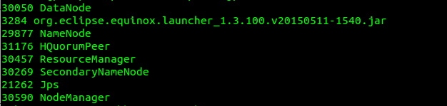
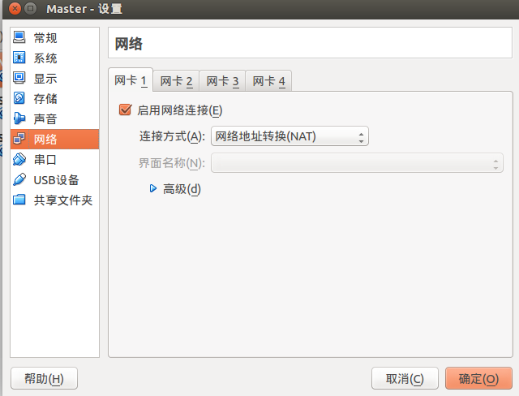

配置本地环境
ps:本机8G内存(可以模拟3台虚拟机<总6G>+本地2G)
1.主机采用伪分布,用于测试所写的MR程序,然后将所编译的jar包通过scp上传到HDFS集群．这样就可以DeBug MR
由于我启动了HBase，所以在jvm中会有HBase的进程

２.安装3台虚拟机
2.1)虚拟机网络问题:
VBox可以使用多网卡,所以可以装2个网卡,一个用于和本地主机公用Net网络,另一个用于虚拟机内部的3台互联.
安装一个slave节点,其他的节点可以通过复制虚拟机实现.
2.2)网卡配置


手动为master和slave的桥接网卡分配ip
例如:
master :ip 192.168.1.1 掩码255.255.255.0 网关192.168.1.0
slave :ip 192.168.1.2 掩码255.255.255.0 网关192.168.1.0 手动测试在 master 上 ping 192.168.1.2 有反馈,则为ip搞定
2.3)其他配置
1.开放主机22000端口
sudo ufw allow 22000
2.虚拟机做端口映射
22000 -> 22 //(ssh scp 默认22 端口)
22001 -> 50020
22002 -> 90002.4)scp向虚拟机传输文件
scp -P 22000 文件路径 hadoop@localhost:~/ #大写P_小写不行这时可以将jdk包和hadoop包通过scp传到虚拟机内部现在4台电脑你自己可以通过自定义端口来实现互相联通
其实做共享文件夹也可以
sudo mount -t vboxsf 共享文件夹名称 /mnt/ 要想自动挂载的话，可以在/etc/fstab中添加一项
共享文件夹名称
/mnt/ vboxsf rw,gid=100,uid=1000,auto 0 0`剩下的任务就需要配置jdk和hadoop了,可以去官网上查看配置信息